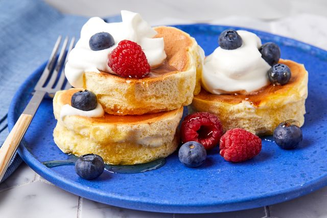

Japanese Souffle Pancakes

Description
Let's face it, pancakes aren't exacly glamorous. But JAPANESE pancakes? Japanese SOUFFLE pancakes? Whoa. Now we're talking. This odd marriage of simple American diner food, classic French cooking technique, and Japanese creativity and innovation is certainly worth the extra time and effort you'll need to make them. They turn out light, fluffy, and feel incredibly decadent. You'll never look at pancakes the same way.
Ingredients
- 2 large egg yolks
- 2 tablespoons milk
- 1/2 teaspoon almond extract
- 1/4 cup all-purpose flour, sifted
- 1/4 teaspoon kosher salt
- 3 large egg whites
- 1/4 teaspoon cream of tartar
- 1/2 teaspoon lemon juice
- 3 1/2 tablespoons powdered sugar
- Neutral oil (for greasing)
- 2 tablespoons water
- Toppings of your choice (butter, berries, syrup, chocolate chips...)
Steps
- In a mixing bowl, by hand, whisk together egg yolks, milk, almond extract, and lemon zest. Add the flour and salt and whisk until smooth. Set aside.
- In the bowl of a stand mixer using a whisk attachment, combine egg whites and lemon juice. Beat on medium high speed until frothy then sprinkle in cream of tartar with the mixer running. When egg whites have become more frothy than liquidy, scrape down the sides of the bowl to make sure all cream of tartar is incorporated. Return whisk to medium high speed and very gradually add powdered sugar to the egg whites, continuing to whip until the meringue reaches a stiff peak, about 10 minutes. (Since this recipe doesn't use baking powder, this step is super important! Be patient and let the meringue stiffen until it resembles the texture of a marshmallow.)
- While the meringue whips, prep 4 ring molds by wiping the insides with neutral oil. Place the ring molds in a large nonstick skillet (with a lid) over low heat. Lightly grease the pan with a neutral oil, making sure to wipe away excess oil. For an electric griddle, the lowest setting should suffice, for a gas stove, medium low. The pan should be warm enough to help the bottoms of the pancakes set but not hot enough to immediately evaporate water.
- Add 1/3 of the meringue into the egg yolk base and mix until incorporated. Add the remaining meringue to the batter and gently fold the meringue into the batter until just incorporated and no more streaks are visible.
- Once the pan is warm, scoop batter into greased ring molds to form 4 even mounds. The batter should be near the top, but be sure not to overfill the ring because it will expand.
- Add 1 tablespoon of water around the pan and cover with lid. Let the pancakes cook, undisturbed for about 8 minutes until the water has evaporated and the bottom of the pancakes have turned a light golden brown.
- Carefully flip the pancakes (see note above) in their rings and add another tablespoon of water to the pan. Cover the pan and cook the pancakes for another 5 to 6 minutes. Once fully cooked, gently remove the ring mold from each pancake using a pair of silicone tongs. If pancakes don't release cleanly, gently slide a butter knife around the edge of the mold and gently jiggle the mold until the pancake comes loose. Once the pancakes are out of their molds, trim any extra with a butter knife.
- Serve the pancakes immediately, topped with softened butter and agave, if using.
Recipe and image courtesy of Delish.com